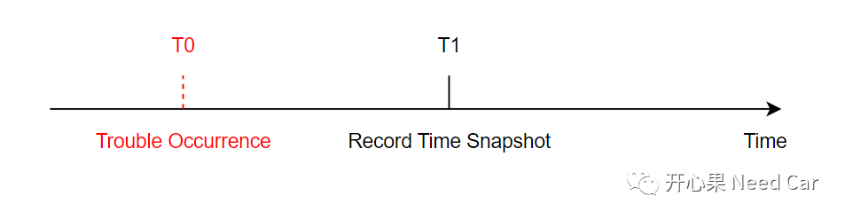
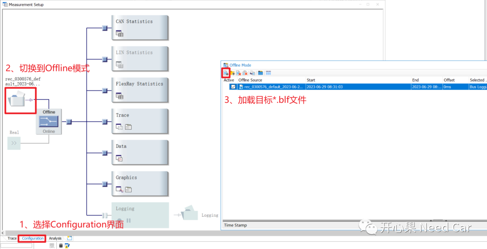
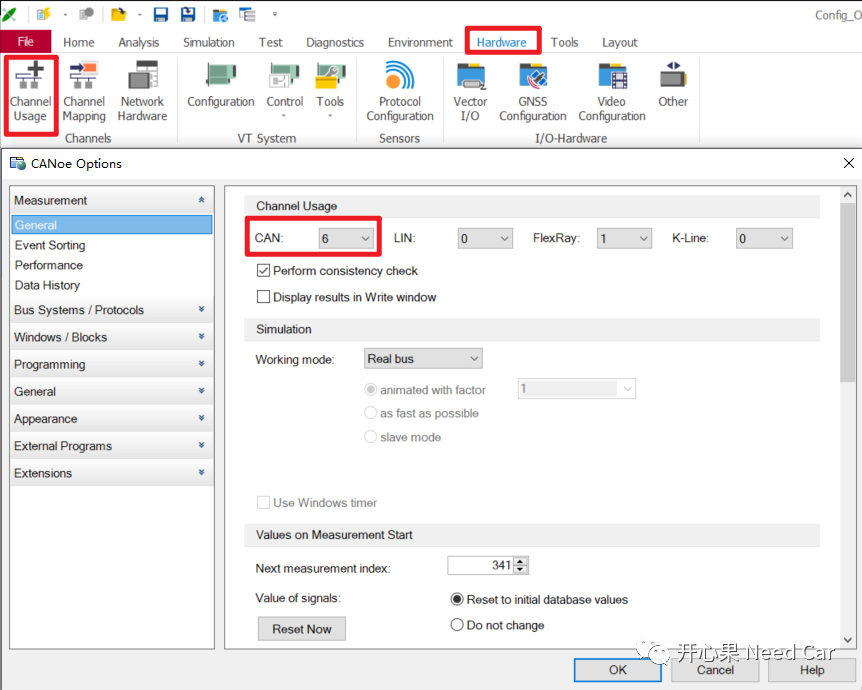
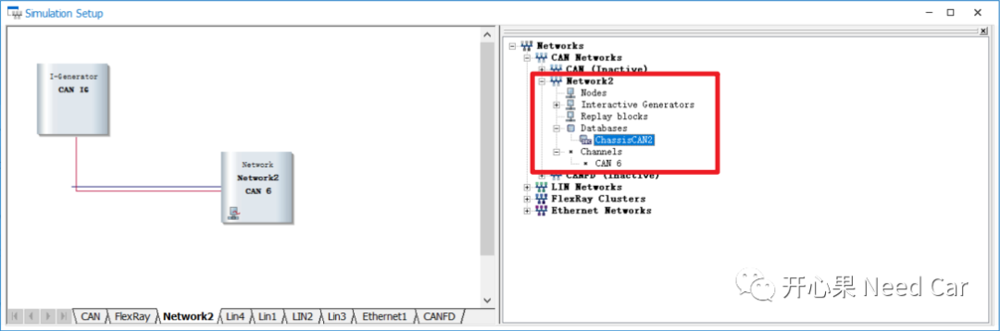
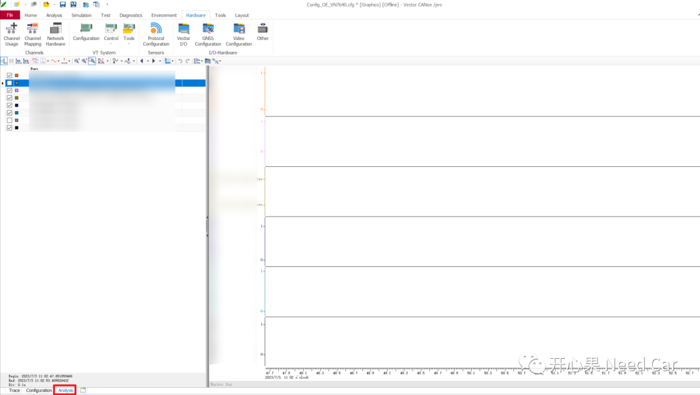
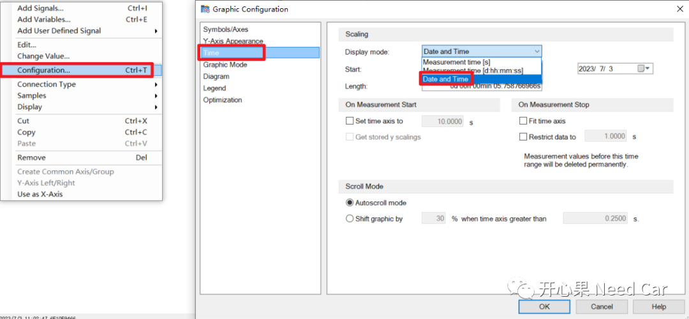
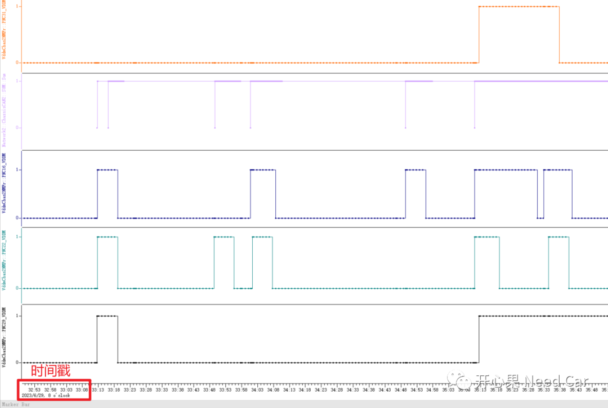

开心果 Need Car · 2023-07-06T07:42:00+08:00 · 微信原文
工程问题排查中，分析log数据（eg：*.blf）是确认问题的关键一环。有些时候，不仅需要数据log，还需要确认数据log记录的时间，以便于准确定位问题。比如：DTC（Diagnostic Trouble Codes）问题分析时，利用快照数据（Snapshot）记录的故障发生时间，可有效地确认当时的车辆工况，进而快速确认问题根因。如下图，T0时刻，故障发生，软件需要在T1时刻记录对应故障时间戳。如果问题上报方提供了故障对应的数据log以及故障DTC对应的snapshot（包含时间戳），那么，问题排查时，即可通过T1时间快速定位log中的T0时刻，进而着重分析T0时刻的车辆运行工况。

问题来了：如何在CANoe中显示*.blf数据的时间戳呢?
1、CANoe设置*.blf文件时间戳操作
（一）加载目标*.blf文件

（二）Channel配置
录制log的工程师，使用的CANoe Channel配置一般与分析工程师的本地CANoe Channel不同，分析工程师确定目标Channel以后，需要进行对应配置，即：Channel Number要保持匹配。

为了方便信号和数据的识别，通信矩阵加载很有必要，通信矩阵根据总线类型选择，eg：*.dbc、*.ldf、*.xml、*.arxml等。

（四）加载分析信号
切换至"Analysis"界面，加载需要分析的信号。



往期精彩回顾
基于Hightec+TC375TP的RT-Thread移植详解